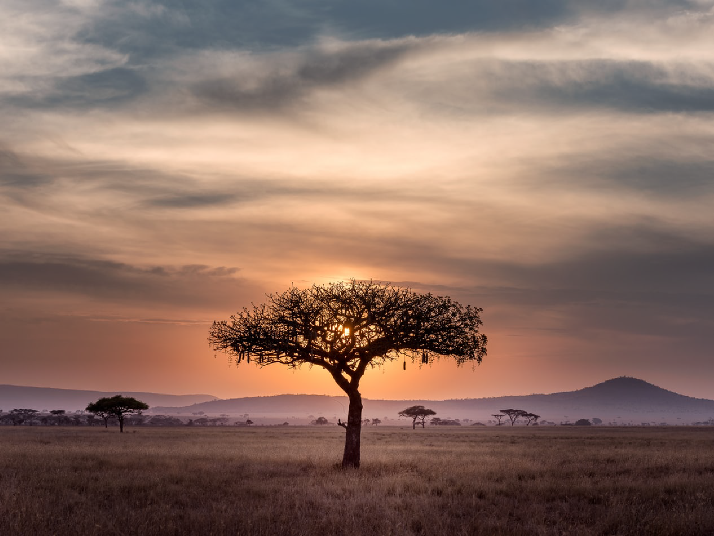
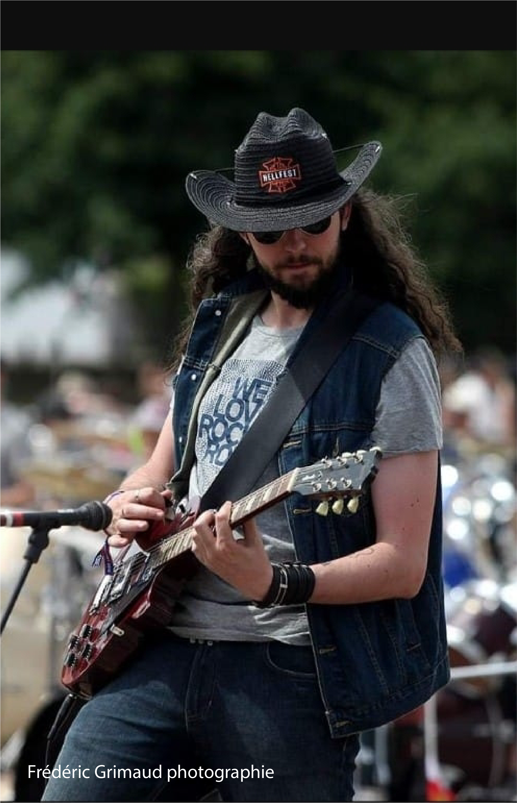
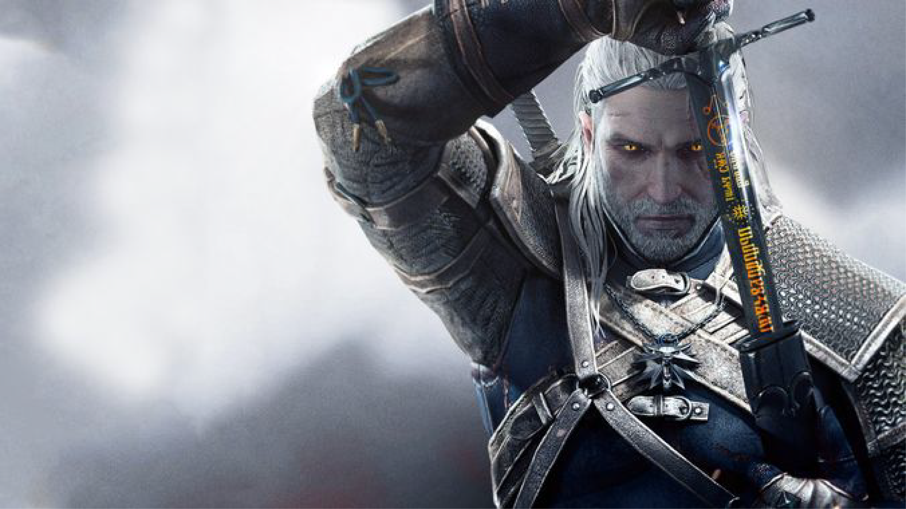
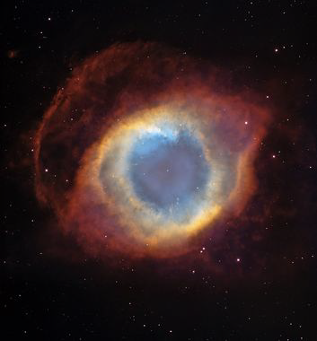

Je suis Barthélémy, Barth pour mes proches. Je suis né le 17 Mars 1993 à Paris 19e , où je n’ai eu que 48h avant d’entamer le début de ce qui sera une très longue série de voyages à travers le monde.
Ainsi, à 2 jours d’existence, je partais pour le soleil de l’Afrique du Sud, 101 Dennis Road à Johannesburg, où j’ai passé les 4 premières années de ma vie, faisant de l’anglais ma langue natale par ailleurs.
Ensuite, je suis rentré en France, où j’ai vécu dans différents endroits, avant de chuter en Normandie lors de mon dixième printemps.

En ce qui concerne mon parcours professionnel, j’ai décroché en 2012 mon baccalauréat scientifique mention européenne, faisant de moi un bilingue anglophone confirmé.
J’ai ensuite commencé des études très centrées sur le médical et les sciences académiques (je possède aujourd’hui encore des compétences en soin et en chimie, cordes toujours utiles à ajouter à son arc).
Durant ces années j’ai officié au CHU de Rouen, dans différents postes (bloc opératoire, stérilisation centrale,pharmacie, chirurgie ORL, psychiatrie…). Mais pour diverses raisons, notamment une prise de conscience de ce que serait ma vocation à long terme, j’ai écourté mes études en soins infirmiers, et j’ai commencé à travailler dans d’autres domaines.
J’ai notamment été vendeur de jeux de société, equipier polyvalent en restauration rapide, barman, ouvreur de salle au Zénith… avant de commencer ma formation à la Normandie Web School, que j’avais découverte lors du salon de l’emploi, à la recherche d’un énième travail.
Geek dans l’âme depuis mon plus jeune âge, les écrans m’ont toujours attirés et fascinés, d’aussi loin que remontent mes souvenirs. Passionné de jeux vidéos, au grand dam de mes parents, j’ai toujours baigné dans cet univers de pop culture au travers des jeux et d’internet.
Ça ne m’empêche cependant pas d’avoir d’autres passions dans la vie, à noter la musique et la lecture qui occupent une place prépondérante dans mon quotidien. Je suis moi même musicien dans un groupe de rock basé à Rouen, où je suis le guitariste lead. Et lorsque je n’en joue pas, j’en écoute ! Je le porte jusque dans ma peau, ayant plusieurs tatouages en rapports avec la musique.
En ce qui concerne les lettres, je dévore régulièrement romans, bandes dessinées, comics, recueils de nouvelles… Il est rare de ne pas trouver un bouquin dans ma besace !
Cet amour des mots m’a donné une certaine aisance avec la langue de Molière, ce qui fait de moi un recours pour mes collègues/amis lorsqu’il faut trouver comment tourner astucieusement une phrase.

Qu'ai-je fait?
Les études
2012: Baccalauréat scientifique avec mention européenne
2012-2014: PACES à la faculté de médecine de Rouen
2014-2016: DUT Chimie à l'IUT de Mont Saint-Aignan
Mars-Juin 2016: L1 Biologie à la faculté des sciences de Mont Saint-Aignan
Février-Septembre 2017: Formation aux soins infirmiers
Octobre 2019- / : Bachelor chef de projet digital, à la Normandie Web School
Le professionnel
Été 2013: Agent de Service Hospitalier au bloc neurochirurgical du CHU Charles Nicolle de Rouen.
Été 2015: Agent de stérilisation au pôle pharmacie du CHU Charles Nicolle
Été 2016: Agent de stérilisation au même pôle
Octobre-Décembre 2016: Agent de stérilisation au même pôle
Avril-Juin 2017: Infirmier au service de chirurgie ORL, CHU Charles Nicolle
Août 2017: infirmier au pavillon Monet au CHR de St-Etienne du Rouvray
Octobre 2017: infirmier en gérontopsychiatrie au centre hospitalier de Oissel
Décembre 2017: Vendeur au Bazar du Bizarre à Rouen
Avril-Juin 2018: Equipier polyvalent au Macdonald de Grand Quevilly
Juillet-Août 2018: Barman au Délirium café, à Rouen
Qu'aime-je?
Si je suis ici, c'est qu'à un moment de ma vie j'ai développé une attirance irrépréssible pour les écrans, et plus précisément les écrans sur lesquels j'avais une incidence.
Les jeux vidéos sont par exemple pour moi une intarissable passion, du gigantesque triple A distribué par les gros éditeurs au petit jeu indépendant, débordant de poésie et d'émotions. Le culture internet et ses dérivés quand à eux rythment ma vie, en ce qui concernent les sorties de matériels, ou les innovations technologiques dans le domaine.
Mes plus gros coups de coeur dans le milieu sont sans conteste Golden Sun 1 & 2, la saga The Witcher (cet univers s'étend par ailleurs sur le côté littéraire, "The Witcher" étant à la base une série de romans écrit par Andrzej Sapkowsky, un auteur polonais) ainsi que la trilogie Mass Effect.
Mais j'ai d'autres coups de coeur, dans les jeux qui m'ont émus par leur beauté, tels que Unravel ou Ori and the Blind Forest.

Autre chose à savoir sur moi: Le silence n'a pas sa place, ce n'est pas mon ami. La musique occupe la quasi totalité de ma vie, et lorsque je n'en écoute pas, c'est que j'en fais.
Je suis maintenant depuis près de trois ans le guitariste lead du groupe Feel That Punch, groupe de rock Rouennais, garanti sans additifs!
En influence majeure, je ne peux citer qu'Eric Clapton et Slash, les deux guitaristes qui m'ont fait me dire : "Bon sang, moi aussi!"
en termes d'écoute pure, je suis très eccléctique, ma playlist pouvant passer des Beatles à Goldman, en faisant un passage par Beethoven, parfois un crochet vers l'électro et le rap, et un arrêt à la station du métal un peu plus abrasif, mais mes deux amours restent le blues et le rock.
Ma chanson préférée, que je peux écouter et réécouter sans cesse est "In the Waiting Line", du groupe Zero 7. Il s'agit d'une chanson de Trip-hop, très douce et reposante. Ecoutez ça avec un bon café devant une fenêtre lors d'un jour pluvieux, vous verrez!
Quand à mon dernier coup de coeur musical, il s'agit du groupe suédois Ghost, qui fait la part belle au rock/metal old school années 70!
Et si je ne joue à rien, et que je ne joue de rien, alors je me réfugie dans un bouquin. "La lecture agrandit l'âme, et un ami éclairé la console" Voltaire.
Un livre est le parfait compagnon, propices aux errances oniriques, nous emmenant parfois dans des voyages nous révélant de nouvelles destinations.
Parmi mes auteurs favoris, commençons par Albert Camus, qui m'a bouleversé avec L'étranger, puis plus tard avec le Mythe de Sisyphe. Je citerai de nouveau l'auteur de The Witcher, dont l'univers me fascine encore aujourd'hui.
Bernard Werber m'amuse beaucoup, pour ses livres remplies d'informations insolites. Je dévore Hubert Reeves, étant passioné par ce qui se passe au dessus de nous, ou encore le sempiternel J.R.R Tolkien, qui m'a fait découvrir et aimer l'Heroic Fantasy lorsque j'étais adolescent.

Comme dit précédemment, j'ai une fascination en ce qui concerne l'astronomie et l'aéronautique, par conséquent je suis beaucoup de vidéastes et auteurs sur le sujet, et je ne rate aucun évènement dans le milieu, tels que les lancements des fusées Falcon Heavy de Space X, la société d'Elon Musk, souvent restranscrits en direct sur Youtube.